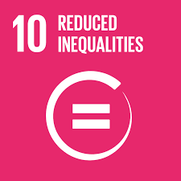
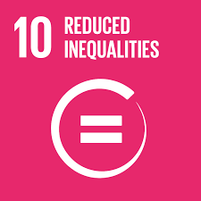

Valorizzare le persone
Punti Chiave
- Tutela della salute, sicurezza e benessere
- Diversità, equità e inclusione
- Sviluppo personale e formazione continua
- Diritti umani e condizioni di lavoro
- Coinvolgimento delle comunità e sostegno locale
Analisi
Nel quindicesimo rapporto di sostenibilità, Ferrero offre un quadro chiaro di ciò che significa investire nelle persone per un’impresa globale. Non solo dal punto di vista economico o produttivo, ma soprattutto come scelta culturale e sociale che valorizza la dignità, il potenziale e l’unicità di ogni individuo.
Un aspetto centrale di questa filosofia è la promozione della salute e sicurezza sul lavoro. Ferrero non si limita al rispetto delle normative, ma si impegna a creare un ambiente in cui ogni lavoratore si senta sicuro, ascoltato e sostenuto.
Le iniziative aziendali si sviluppano su quattro ambiti principali: salute, energia, protezione e comunità. Tra le azioni concrete si annoverano giornate di sensibilizzazione, programmi di ascolto psicologico e interventi per promuovere il benessere emotivo, che hanno contribuito a ridurre del 9% gli infortuni con giorni persi nel 2022/23.
Questo riflette una filosofia che pone la persona al centro non per la produttività, ma per il rispetto che le è dovuto.
Ferrero si distingue per il suo impegno nel promuovere diversità, equità e inclusione. L’azienda opera su diversi livelli: di genere, generazionale, culturale e fisico. Nel 2023, ha firmato la Diversity Charter Lëtzebuerg e ha integrato indicatori legati alla diversità nei sistemi di incentivazione manageriale.
Inoltre, il programma Acceleration, dedicato alla crescita delle future leader, riflette la volontà di rafforzare la presenza femminile nella leadership aziendale, che oggi rappresenta il 33,4% dei ruoli manageriali.
Ferrero considera la formazione un elemento chiave per la crescita personale e professionale dei suoi dipendenti. Attraverso iniziative come la Ferrero University, il Master in International Management (in collaborazione con SDA Bocconi), programmi di mentoring e feedback continuo, l’azienda investe nello sviluppo delle competenze.
Questo approccio non si limita all’aggiornamento tecnico, ma rappresenta un atto di fiducia reciproca tra azienda e lavoratore, in quanto ogni talento merita di essere valorizzato e sostenuto.
L’approccio di Ferrero all’empowerment si estende alle comunità rurali da cui provengono gli ingredienti chiave come cacao, nocciole e olio di palma. In Costa d’Avorio, l’azienda ha implementato un programma in 65 comunità, coinvolgendo oltre 18.000 persone con iniziative quali la costruzione di pompe d’acqua, mense scolastiche e cooperative di credito.
In Malesia, Ferrero lavora per migliorare le condizioni dei lavoratori migranti, affrontando temi come il reclutamento etico e la non discriminazione. Questo dimostra che l’impresa può essere un motore di cambiamento.
Ferrero ha integrato il rispetto dei diritti umani nella sua governance attraverso un sistema di due diligence che include valutazioni di rischio, audit e collaborazioni con ONG specializzate. Tra gli esempi spicca il progetto con Save the Children per prevenire il lavoro minorile nella filiera del cacao, dimostrando un approccio proattivo e strutturato.
L’impegno di Ferrero verso le persone è profondo e articolato. Dalla sicurezza sul lavoro alla promozione dell’inclusione, dalla formazione al supporto delle comunità agricole, ogni iniziativa riflette la convinzione che le persone siano il motore principale del cambiamento. In un contesto globale frammentato, questa visione restituisce valore al lavoro e responsabilità all’impresa, ricordandoci che la sostenibilità è prima di tutto una questione umana.
Come ci allineiamo agli Obiettivi di Sviluppo Sostenibile (SDG)


 
